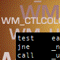
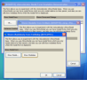
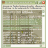
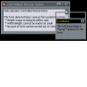
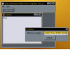
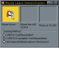
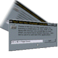
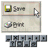

High Resolution Multimedia Timer
High Resolution Multimedia Timer
 Subclassing and Hooking with Machine Code Thunks
Subclassing and Hooking with Machine Code Thunks

Subclassing Index
Subclassing Without The CrashesPrior to VB5, it was impossible to subclass a control without relying on a proprietary custom control. This greatly restricted what you could do if you wanted to play around with some of the neater customisation features - creating a new control was completely out, finding out in detail what was going on with menus was impossible and so on. The introduction of the AddressOf operator to VB5 now allows you to subclass, although it is not nearly as simple as it ought to be. The SSubTmr component is a more stable and consistent way of working with subclassing, without some of the attendent difficulties. You can either use it as an external DLL to provide, or by including one module and one interface class, you can compile it directly into your application once you are happy the subclassing is working. SSubTmr is the basis for most of the VB controls on this site. The component itself mostly uses the SubTimer.DLL component code from Bruce McKinney's excellent "Hardcore Visual Basic" book, however it has a couple of very useful enhancements described in this article. Last Updated: 26 January 2003 | |
|  | SSubTimer - ASM Thunk VersionThe SSubTimer component launched on this site in 1998 has been used extensively to solve two of the difficulties associated with subclassing Window messages in Visual Basic: allowing subclassing code to be encapsulated so that independent subclassers do not negatively interact with each other and abstracting an application from low-level underlying details of installing and removing the callback procedure function. However, the use of Visual Basic code to run the callback meant that it was still possible to crash the IDE during debugging. This article provides a binary compatible implementation of the original SSubTimer which uses an ASM Thunk and includes IDE detection which means even better stability. Last Updated: 25 April 2004 |
|  | Emulating Modal FormsSometimes, the restrictions applied when showing a modal form can be restrictive. For example, if your application can have more than one main view window, a modal dialog prevents any other form from being activated whilst the modal dialog is displayed. Another example occurs when you want to try and show a Drop-Down Form or a floating toolbar from an otherwise modal form. This article demonstrates how to emulate showing a modal form and fix these limitations. Last Updated: 1 November 2003 |
 | Adding Scroll Bars to Forms, PictureBoxes and User ControlsIn the Win32 API, all windows can have scroll bars. However, this feature is not exposed in any way in Visual Basic. Its not too hard to enable, though provided you can intercept WM_HSCROLL and WM_VSCROLL messages sent to the window. This project provides a small, self-contained class which extends Forms, UserControls and PictureBoxes to allow full scroll-bar functionality. This class is based on the Flat Scroll-Bar control and provides the same functionality but in a smaller, easier-to-use package which you can compile directly into your executable. Last Updated: 2 July 2003 |
|  | Tile a Bitmap Into a TextBox BackgroundThis sample presents a small class that allows you to tile a bitmap into the background of a TextBox. Note that the technique only works on multi-line text boxes, as the drawing of single-line TextBoxes is done in a different way and cannot be easily overridden in code. Last Updated: 25 November 2002 |
|  | Sophisticated Control Over Window Sizing and MovingVB's control over moving and sizing isn't much - basically you have the Resize event, as has been the case since VB1. Windows gives you a lot more control over moving and sizing forms if you need it though. For example, try resizing an undocked tool window in MS Office. You will see that the size snaps so groups of buttons or controls are kept on the same line. This sample demonstrates how to get access to all the more sophisticated moving and sizing messages, and how to use them to control your window's resize without the flickering and jumping to position you get if you try to change size during VB's Resize event. Last Updated: 25 August 1999 |
|  | Keep Form Titlebars in Focus when ToolWindows are ShownThe ToolWindow style, introduced with VB4, allowing you to easily create pop-up tool windows with small captions. However, there is (and has always been) a problem with them: whenever the form or a control on it gets the focus, it appears that the main form of your application looses focus. Whilst maybe this isn't the worst user-interface crime in the world, it is annoying and makes your application look unprofessional compared to the smoother behaviour in Word, Excel, DevStudio etc. This subclassing sample demonstrates how to fix the title bar problem with a working but, erm, rather slimy hack. Last Updated: 25 August 1999 |
|  | Generating MouseLeave Events for a WindowAlmost all of the more recent windows control support a feature known as "Hot-Tracking" - that is, when the control appears to highlight when the mouse moves over it, then returns to normal when the mouse leaves. Common examples include the flat toolbar buttons provided with the Windows Commmon controls. This article demonstrates how to add this to your controls - properly. Last Updated: 17 February 1999 |
|  | Creating and Responding to System-Wide HotkeysWin32 allows you to set up combinations of key-presses which can be associated with an application on a system-wide scope, called Hotkeys. When a user presses a registered HotKey it doesn't matter which application is active when they pressed it, the hot-key message will get routed to your application. Last Updated: 27 January 1999 |
|  | Drawing Buttons, Option Boxes and Check Boxes In Your Own StyleIf you set the Style property for VB's CommandButton, OptionBox or CheckBox controls to Graphical, VB turns the control into an Owner-Draw control. By default VB allows you to associate three pictures with these controls. However, if you've ever tried this you will know that the button draws like a turd when you set these properties. The code with this sample shows you how to intercept the WM_DRAWITEM messages an Owner-Draw button sends to its parent whenever it is about to draw itself and replace VB's implementation with something a bit nicer. Last Updated: 27 January 1999 |